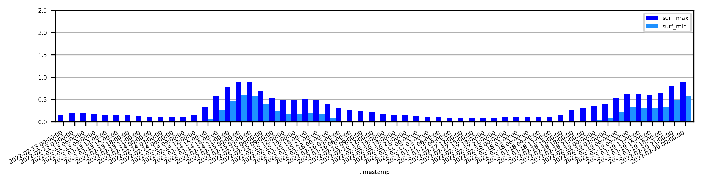

Get forecast for a specific spot
[29]:
%load_ext autoreload
%autoreload 2
import requests
import matplotlib.pyplot as plt
import matplotlib
import matplotlib.dates as mdates
import datetime
import pandas as pd
from pysurfline import SpotForecast,URLBuilder
The autoreload extension is already loaded. To reload it, use:
%reload_ext autoreload
[30]:
u=URLBuilder("wave",{"spotId":"584204204e65fad6a7709b09"})
r = requests.get(u.url)
r.status_code
[30]:
200
[31]:
f=SpotForecast(r.json())
[32]:
f.location
[32]:
{'lon': 8.577, 'lat': 44.358}
[33]:
waves=f.get_dataframe("wave")
waves.head()
[33]:
| timestamp | utcOffset | surf_min | surf_max | surf_optimalScore | swells | |
|---|---|---|---|---|---|---|
| 0 | 2022-02-13 00:00:00 | 1 | 0.0 | 0.16 | 0 | [{'height': 0.89362, 'period': 4, 'direction':... |
| 1 | 2022-02-13 01:00:00 | 1 | 0.0 | 0.16 | 0 | [{'height': 0.81617, 'period': 4, 'direction':... |
| 2 | 2022-02-13 02:00:00 | 1 | 0.0 | 0.16 | 0 | [{'height': 0.76001, 'period': 4, 'direction':... |
| 3 | 2022-02-13 03:00:00 | 1 | 0.0 | 0.18 | 0 | [{'height': 0.69152, 'period': 4, 'direction':... |
| 4 | 2022-02-13 04:00:00 | 1 | 0.0 | 0.20 | 0 | [{'height': 0.62422, 'period': 4, 'direction':... |
[34]:
surf=waves.copy()[["timestamp","surf_min", "surf_max"]]
surf["timestamp"]=pd.to_datetime(surf["timestamp"])
surf=surf.set_index("timestamp")
surf=surf.resample("3H").mean()
days=7
surf=surf.loc[:surf.index[0]+datetime.timedelta(days=7)]
surf.head()
[34]:
| surf_min | surf_max | |
|---|---|---|
| timestamp | ||
| 2022-02-13 00:00:00 | 0.0 | 0.160000 |
| 2022-02-13 03:00:00 | 0.0 | 0.193333 |
| 2022-02-13 06:00:00 | 0.0 | 0.190000 |
| 2022-02-13 09:00:00 | 0.0 | 0.166667 |
| 2022-02-13 12:00:00 | 0.0 | 0.143333 |
[35]:
matplotlib.rcParams.update({'font.size': 5})
f,ax=plt.subplots(figsize=(10,2),dpi=300)
ax.xaxis.set_major_formatter("%d-%b")
surf.plot.bar(y=["surf_max","surf_min"],color=["blue","dodgerblue"],ax=ax,zorder=2,width=1)
ax.set_ylim([0,2.5])
ax.grid(axis="y",zorder=0)
ax.figure.autofmt_xdate()
# date_fmt = '%d-%b %H'
# years = mdates.DayLocator() # every year
# # yearsFmt = mdates.DateFormatter(date_fmt)
# ax.xaxis.set_major_locator(years)
# ax.xaxis.set_major_formatter(yearsFmt)
